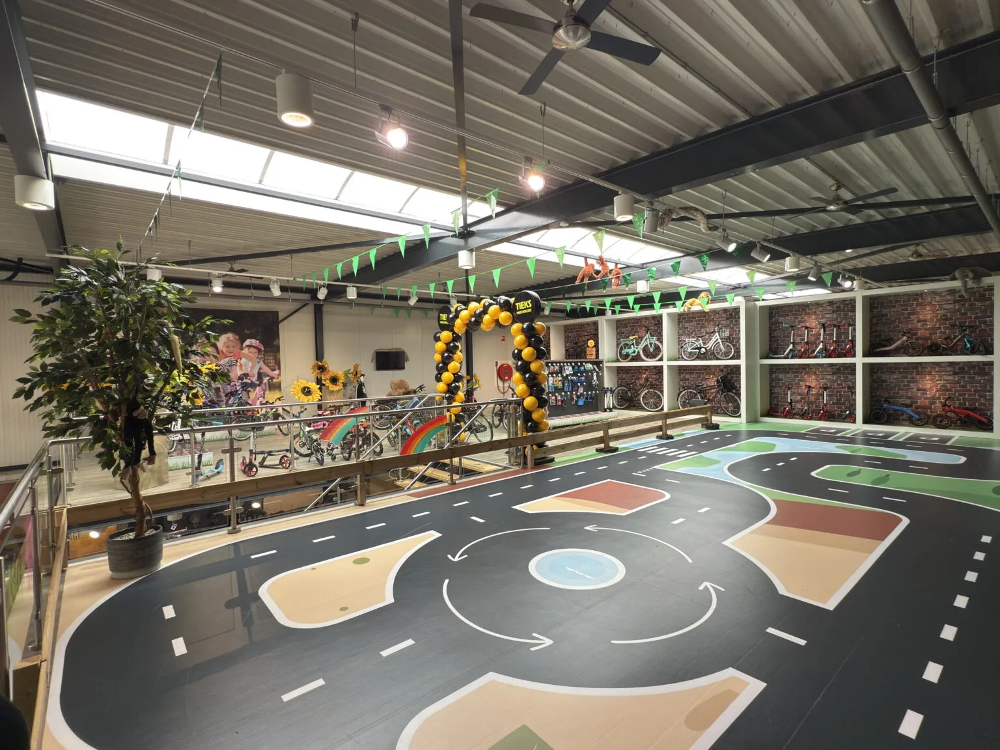
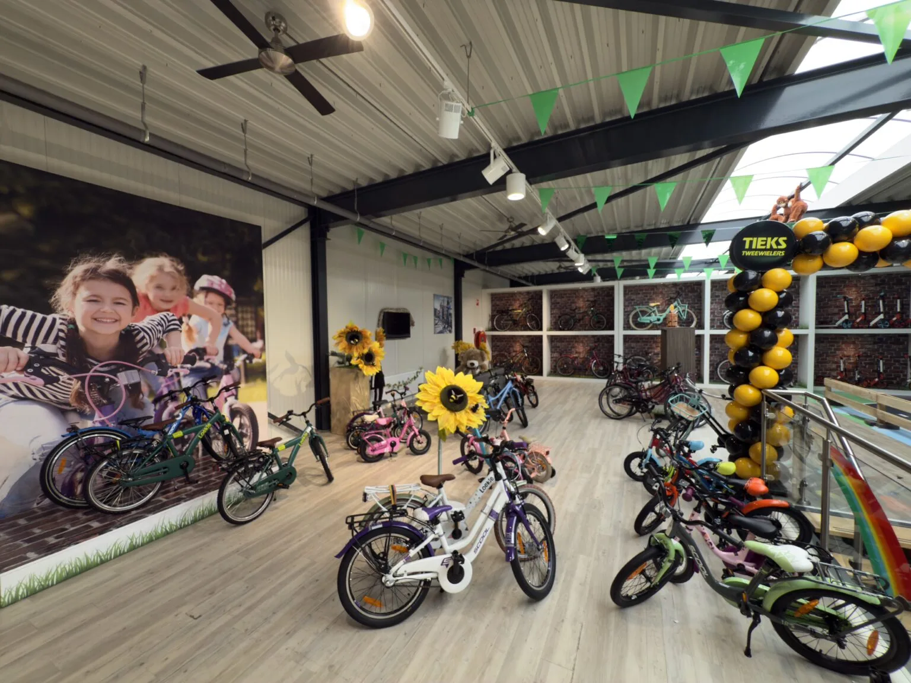

Nieuwe én gebruikte kinderfietsen in verschillende soorten en maten, plus loopfietsen, meegroeifietsen, steps en accessoires.
Voor de allerjongste fietsers heeft Tieks een testparcours aangelegd. Zo kunnen kinderen rustig en veilig proberen wat goed voelt voordat er een fiets wordt gekozen.